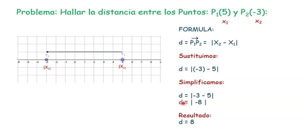
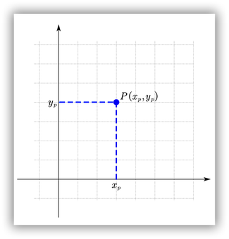

En un sistema coordenado lineal, la longitud del segmento dirigido que une dos puntos se obtiene, en magnitud y signo, restando la coordenada del punto de origen de la coordenada del punto final. La distancia entre dos puntos se define como el valor numérico (valor absoluto) de la longitud del segmento rectilíneo que une esos dos puntos.
Ejemplo:

Este se representa con dos rectas numéricas ortogonales, una horizontal y otra vertical, que se cortan en un punto llamado origen o punto cero.
Cualquier punto P en el plano xy se puede representar por medio de un par ordenado (x, y) de números reales que indican la posición de dicho punto respecto de los ejes de coordenadas.
La coordenada xp es la abscisa del punto o coordenada x, y se mide sobre el eje X, siendo la proyección ortogonal del punto en el eje X.
La segunda coordenada, y p es la ordenada del punto o coordenada y, y se mide sobre el eje Y, siendo la proyección perpendicular del punto sobre el eje vertical.
